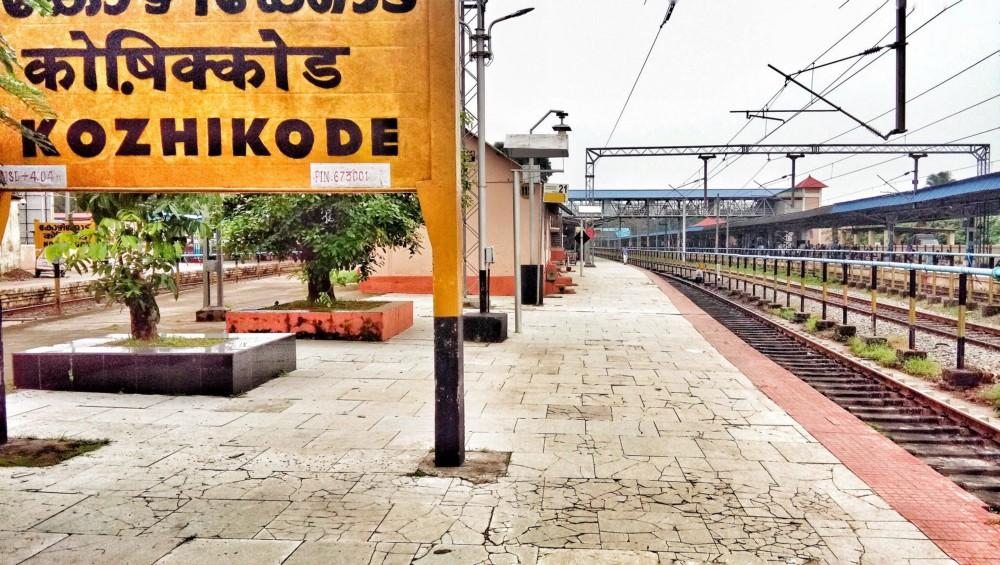
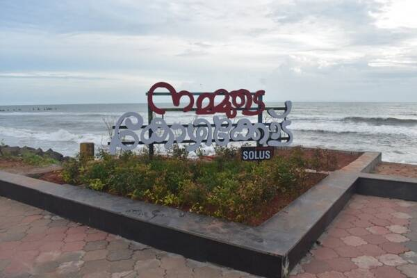
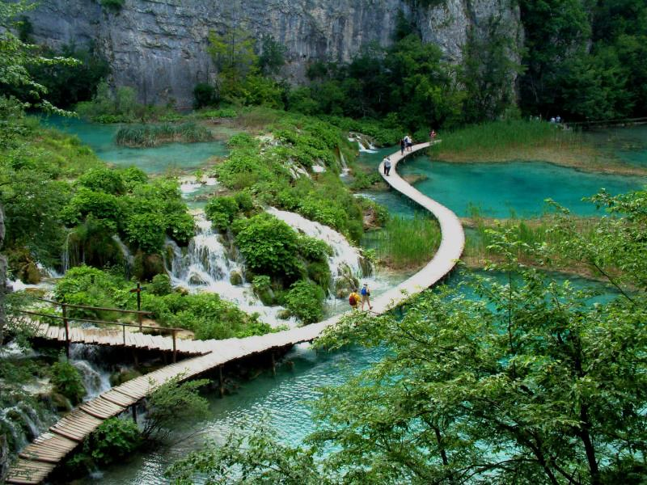
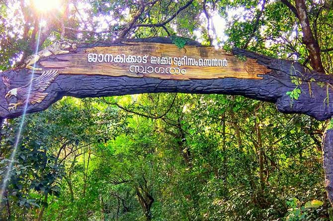

1 / 6

railway station
2 / 6

kozhikode
3 / 6

kozhikode-beach
4 / 6

kozhikode
5 / 6

cherapunchi waterfalls
6 / 6

janakikkad
Kozhikode also known as Calicut, is a city in the state of Kerala in southern India on the Malabar coast. Kozhikode is the largest urban area in the state and 195th largest urban area in the world. During classical antiquity and the Middle Ages, Kozhikode was dubbed the “City of Spices” for its role as the major trading point of Eastern spices. It was the capital of an independent kingdom ruled by the Samoothiris(Zamorins) in the Middle Ages and later the capital of the erstwhile Malabar district under British rule. Arab merchants traded with the region as early as 7th century, and Portuguese explorer Vasco da Gama dropped anchor at Kozhikode on 20 May 1498, thus opening a trade route between Europe and Malabar. A Portuguese factory and fort functioned in Kozhikode for a short period (1511–1525, until the Fall of Calicut). The English landed in 1615 (constructing a trading post in 1665), followed by the French (1698) and the Dutch (1752). In 1765, Mysore captured Kozhikode as part of its occupation of the Malabar Coast.
While the city has been known in history under different names, Malayalam speaking communities have traditionally called it Kozhikode. Arab merchants called it Qāliqūṭ. Tamils called it Kallikkottai while for the Chinese it was Kalifo. Although the city’s official name is Kozhikode, in English it is sometimes known by its anglicised version, Calicut. The word calico, a fine variety of hand-woven cotton cloth that was exported from the port of Kozhikode, is thought to have been derived from Calicut.
Kozhikode is a town with a long recorded history. From time immemorial, the city has attracted travellers with its prosperity. It has traded in spices like black pepper and cardamom with Jews, Arabs, Phoenicians, and Chinese for more than 500 years. As Kozhikode offered full freedom and security, the Arab and the Chinese merchants preferred it to all other ports. Kozhikode was the capital of Malabar during the time of Sri Samoothiri Maharajas, who ruled the region before the British took over. The city’s first recorded contact with Europe was when Vasco da Gama docked at Kappad (18 km north) in May 1498, among the leaders of a trade mission from Portugal. He was received by Sri Samoothiri Maharaja himself. Kozhikode and its suburbs formed part of the Polanad kingdom ruled by the Porlatiri. The Eradis of Nediyirippu in Eranad wanted an outlet to the sea, to initiate trade and commerce with the distant lands and after fighting with the king Polatthiri for 48 years conquered the area around Panniyankara.
Kozhikode is home to a genial culture and rich traditions. It is famous for ‘Mappilappattu’, ‘Kolkali’ and ‘Oppana’ which are the traditional art forms of the Muslim communities of Malabar. ‘Thirayattam’ and ‘Theyyam’ are the temple based art forms predominant in the Northern regions of the district. The highly popular folk songs or ballads known as ‘Vadakkan Pattuakal’ celebrates the valour and might of the martial art of Kerala, the ‘Kalaripayattu’ and its legendary exponents like Thacholi Othenan, Chandhu Chekavar, Unniyarcha, Aromal Chekavar and others. The intellectual debates of vedic scholars to win the position of Pattathanam (Revathy Pattathanam) takes place at Thali temple during the month of ‘Thulam’ (October-November).
Kozhikode carries in its heart the melodies of Ghazals and Hindustani music and hums the songs of Rafi Saheb, Kishore Kumar, Mukesh, Hemanth Da, Talat Mahmood, Manna Dey and others. Its strong association with the game of football is marked by the huge fan following and the enthusiasm and spirit that is held up during the FIFA World Cup and local Football matches.
The ‘Mittayi Theruvu’ also known as the SM Street, got its name from the ‘Sweet Kozhikkodan Halwa’ which the Europeans called Sweet Meat (SM). It is a long street with its entire length filled with shops that sell everything one could ever need.
Kozhikode is the food capital of Kerala with its mouth-watering dishes like the ‘Kozhikkodan Biriyani’, ‘Chattippathiri’, ‘Irachipathiri’, ‘Elanchi’, ‘Pazham Nirachathu’, ‘Unnakkaya’ ‘Sulaimani’ – the special Kozhikkodan lemon tea and others, all served with love.
The unique and accommodative culture of Kozhikode celebrates the festivals of Onam, Vishu, Eid and Christmas with equal pomp and joy.